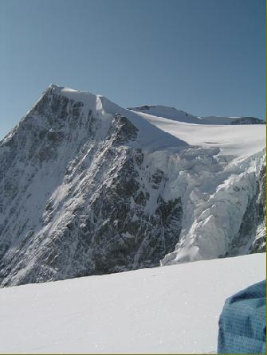
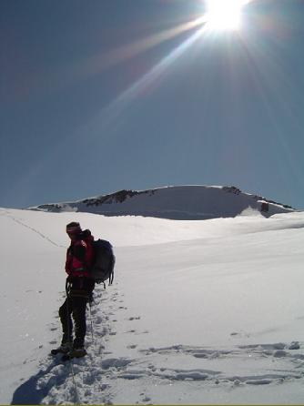
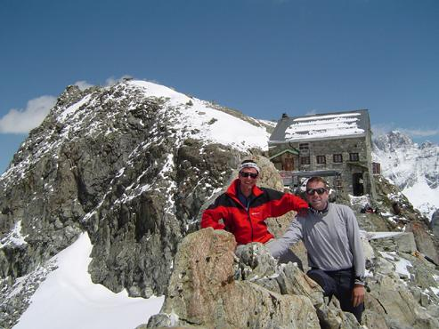
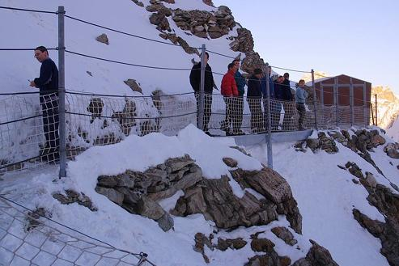
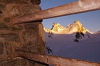
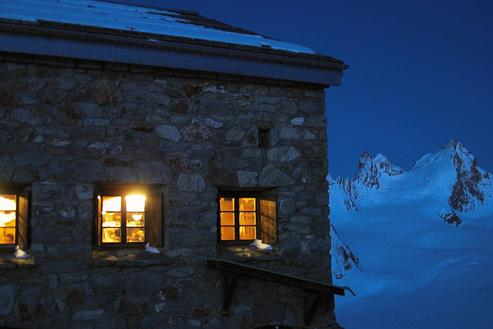

<!doctype html public "-//IETF//DTD HTML 2.0//EN"><html><head><meta http-equiv="imagetoolbar" content="no"><meta http-equiv="Content-Language" content="nl"><meta http-equiv="Content-Type" content="text/html; charset=windows-1252"><meta name="Generator" content="Microsoft FrontPage 5.0"><meta name="ProgId" content="FrontPage.Editor.Document"><title>Valpelline - Val d'Hérens 5</titl<!-- Matomo -->
<script type="text/javascript">
  var _paq = window._paq || [];
  /* tracker methods like "setCustomDimension" should be called before "trackPageView" */
  _paq.push(["setDocumentTitle", document.domain + "/" + document.title]);
  _paq.push(['trackPageView']);
  _paq.push(['enableLinkTracking']);
  (function() {
    var u="https://adsrv.innocraft.cloud/";
    _paq.push(['setTrackerUrl', u+'matomo.php']);
    _paq.push(['setSiteId', '51']);
    var d=document, g=d.createElement('script'), s=d.getElementsByTagName('script')[0];
    g.type='text/javascript'; g.async=true; g.defer=true; g.src='//cdn.innocraft.cloud/adsrv.innocraft.cloud/matomo.js'; s.parentNode.insertBefore(g,s);
  })();
</script>
<noscript><p></p></noscript>
<!-- End Matomo Code --></head>d><body bgcolor="#ffffff" link="#0066ff" vlink="#6633cc" text="#000000" topmargin=0 leftmargin=0 onmouseover="return true" onload="jh()"><script language="JavaScript" type="text/javascript"><!--
function ncm(){return false}function qp(){alert(unescape("Copyrights !  You are not allowed to download pictures - Het ophalen van afbeeldingen is verboden."));return false}function cn(){fg=event.button;if(fg==2||fg==3)qp()}function pq(e){return(e.which==3)?qp():true}vb=document.all;ls=document.getElementById;function jh(){if(document.images){for(zu=0;zu<document.images.length;zu++){if(vb){if(ls){document.images[zu].oncontextmenu=qp}else{document.images[zu].onmousedown=cn}}if(ls&&!vb){document.images[zu].onmouseup=ncm;document.images[zu].oncontextmenu=ncm}if(document.layers){document.images[zu].onmousedown=pq}}}}//--></script> <a name=top></a> <table border=0 cellpadding=0 cellspacing=0><tr><td></td><td></td><td></td><td></td><td></td><td></td><td></td><td></td><td></td><td></td><td></td><td></td></tr><tr><td width=9 height=9></td><td width=133></td><td width=9></td><td width=11></td><td width=8></td><td width=124></td><td width=8></td><td width=42></td><td width=3></td><td width=155></td><td width=2></td><td width=2></td></tr><tr><td height=47></td><td width=497 height=47 colspan=11 rowspan=1 valign=top align=left> <table border=0 cellpadding=0 cellspacing=0><tr><td width=496 height=47 valign=top align=left bgcolor=#658c9a> <table border=0 cellpadding=0 cellspacing=0><tr><td width=3 height=3></td><td width=489></td><td width=3></td></tr><tr><td height=39></td><td width=489 height=39 valign=top align=left> <p align=center><center><font face="Arial" color=#ffffff size=3><B>Door Valpelline en Val d'Hérens, tussen Chamonix en Zermatt.</B></font><font face="Arial" color=#ffffff size=4><B><br></B></font><font face="Arial" color=#ffffff size=2><B>&copy; 2004 Peter De Smedt</B></font><font face="Arial" color=#ffffff size=4><B><br></B></font> </td><td></td></tr><tr><td height=3></td><td colspan=2></td></tr></table> </td></tr></table> </td></tr><tr><td height=4></td><td colspan=11></td></tr><tr><td height=34></td><td width=497 height=34 colspan=11 rowspan=1 valign=top align=left> <table border=0 cellpadding=0 cellspacing=0><tr><td width=496 height=34 valign=top align=left bgcolor=#c4cfd4> <table border=0 cellpadding=0 cellspacing=0><tr><td width=3 height=3></td><td width=489></td><td width=3></td></tr><tr><td height=26></td><td width=489 height=26 valign=top align=left> <p align=left><font face="Arial" color=#000000 size=3><B>Deel 5:&nbsp; </B></font><font face="Arial" size=2>Woensdag 14/07/2004</font><font face="Arial" size=3><B><br></B></font> </td><td></td></tr><tr><td height=3></td><td colspan=2></td></tr></table> </td></tr></table> </td></tr><tr><td height=4></td><td colspan=11></td></tr><tr><td height=90></td><td width=497 height=90 colspan=11 rowspan=1 valign=top align=left> <table border=0 cellpadding=0 cellspacing=0><tr><td width=3 height=3></td><td width=489></td><td width=3></td></tr><tr><td height=83></td><td width=489 height=83 valign=top align=left> <p align=left><font face="Arial" color=#000000 size=2><B>Dag drie : Cabane des Dix (2928 m) - Glacier du Cheilon (2900 m) - Glacier de Tsena Réfien - Col de Tsijiore Nouve (3423 m) - noordflank v/d Serpentine - Col de Brenay (3639 m) - Pigne d&#39;Arolla (3796 m) - (Col de Charmotane) - Col des Vignettes (3160 m) - Cabane des Vignettes (3194 m). <br></B></font> </td><td></td></tr><tr><td height=3></td><td colspan=2></td></tr></table> </td></tr><tr><td height=4></td><td colspan=11></td></tr><tr><td height=446></td><td width=335 height=446 colspan=7 rowspan=1 valign=top align=left> <div style="border-style: solid; border-width: 1"> </div> </td><td></td><td width=159 height=454 colspan=3 rowspan=2 valign=top align=left> <table border=0 cellpadding=0 cellspacing=0><tr><td width=3 height=3></td><td width=151></td><td width=3></td></tr><tr><td height=446></td><td width=151 height=446 valign=top align=left> <p align=left><font face="Arial" color=#000000 size=2>'s Morgens weer als laatste vertrokken, Marin maakte zich ondertussen al geen zorgen meer en wachtte geduldig op de twee treuzelaars.&nbsp; Marin keek een beetje naar het schitterende weer dat in aantocht lag om 05.00h, de Mont Blanc de Cheilon lag mooi in de opkomende zon.&nbsp; Afscheid genomen van de Cabane des Dix en eerst 150m gedaald tot op de gletsjer, dan gletsjer overgestoken en klaar om vanaf hier 900 meter te stijgen tot op de Pigne d'Arolla.&nbsp; Tijdens de beklimming steken we rustig iedereen voorbij en we winnen vooral veel tijd door niet te lang te rusten, maar we proberen ook zoveel mogelijk foto's te trekken (want misschien is het maar één dag mooi weer?).&nbsp; <br></font> </td><td></td></tr><tr><td height=3></td><td colspan=2></td></tr></table> </td></tr><tr><td height=8></td><td colspan=8></td></tr><tr><td height=7></td><td colspan=11></td></tr><tr><td height=68></td><td width=497 height=68 colspan=11 rowspan=1 valign=top align=left> <table border=0 cellpadding=0 cellspacing=0><tr><td width=3 height=3></td><td width=489></td><td width=3></td></tr><tr><td height=60></td><td width=489 height=60 valign=top align=left> <p align=left><font face="Arial" color=#000000 size=2>Na de Col de Serpetine zitten we vast achter een groep Fransen, die problemen hebben om een niet zo steile ijswand te traverseren.&nbsp; De meeste hebben niet veel ervaring op het ijs en hakken en stampen hele ijsblokken uit de wand.&nbsp; <br></font> </td><td></td></tr><tr><td height=3></td><td colspan=2></td></tr></table> </td></tr><tr><td height=4></td><td colspan=11></td></tr><tr><td height=4></td><td width=153 height=457 colspan=3 rowspan=3 valign=top align=left> <table border=0 cellpadding=0 cellspacing=0><tr><td width=3 height=3></td><td width=145></td><td width=3></td></tr><tr><td height=449></td><td width=145 height=449 valign=top align=left> <p align=left><font face="Arial" color=#000000 size=2>Boven op top is er één groep voor ons (3 Fransen, waarvan één persoon 64 jaar is) en hebben we een prachtig zicht over de hele Alpen : de hoge toppen van Berner Oberland met Jungfrau en Eiger, de Matterhorn en Dent d'Hérens liggen voor ons voor aan te raken, Gran Paradiso in de verte, Mont Blanc in de zon en ook het hele Monte Rosa-gebied met de voor ons gekende toppen (Lyskamm, Parrotspitze,…).<br>Deze Pigne d'Arolla is echt een aanrader om bij goed weer alle toppen te zien.&nbsp; Na een half uurtje maken we ons klaar voor de afdaling naar de Cabane de Vignettes, het is nog vroeg op de dag en halverwege stoppen we om <br></font> </td><td></td></tr><tr><td height=3></td><td colspan=2></td></tr></table> </td><td colspan=8></td></tr><tr><td height=446></td><td></td><td width=334 height=446 colspan=6 rowspan=1 valign=top align=left> <div style="border-style: solid; border-width: 1"> </div> </td><td></td></tr><tr><td height=7></td><td colspan=8></td></tr><tr><td height=8></td><td colspan=11></td></tr><tr><td height=223></td><td width=497 height=223 colspan=11 rowspan=1 valign=top align=left> <table border=0 cellpadding=0 cellspacing=0><tr><td width=3 height=3></td><td width=489></td><td width=3></td></tr><tr><td height=215></td><td width=489 height=215 valign=top align=left> <p align=left><font face="Arial" color=#000000 size=2>van het uitzicht te genieten en een beetje te eten : een rustpauze om met ons gat in de sneeuw in de zon te gaan liggen.&nbsp; Als we dan onze weg vervolgen, daagt plots de Cabane de Vignettes en Dents de Bertol achter de graat op.&nbsp; Een prachtig zicht op een echt arendsnest tegen de rotsen. <br>In het laatste stukje van de afdaling zit er nog een verradelijk stukje, tussen de rotsen en de sneeuw.&nbsp; Voor ons valt de afdaling wel mee, aangezien de sneeuw nog van goede kwaliteit is; maar vanuit de Cabane de Vignettes hebben we 's middags toch de nodige groepen zien vloeken op dit stukje.&nbsp; Net vooraleer we de laatste rotsgraat naar de hut willen starten, komen we nog twee mannen tegen die vanuit de vallei naar boven gekomen zijn.&nbsp; Na half uurtje tegen elkaar te hebben geleuterd in het Frans, blijken we tegen landgenoten te staan praten en schakelen we over op het Nederlands<br></font> </td><td></td></tr><tr><td height=3></td><td colspan=2></td></tr></table> </td></tr><tr><td height=4></td><td colspan=11></td></tr><tr><td height=370></td><td width=493 height=370 colspan=9 rowspan=1 valign=top align=left> <div style="border-style: solid; border-width: 1"> </div> </td><td colspan=2></td></tr><tr><td height=4></td><td colspan=11></td></tr><tr><td height=340></td><td width=497 height=340 colspan=11 rowspan=1 valign=top align=left> <table border=0 cellpadding=0 cellspacing=0><tr><td width=3 height=3></td><td width=489></td><td width=3></td></tr><tr><td height=332></td><td width=489 height=332 valign=top align=left> <p align=left><font face="Arial" color=#000000 size=2>Het avondeten was schitterend : een aperitiefje, goede stevige soep en een heerlijke hoofdschotel.&nbsp; We hadden al een biertje of twee op en ineens komt Marin met een fles wijn voor de kaasschotel als dessert.&nbsp; Was eigenlijk een beetje te veel van het goede, maar Marin had gelijk : bij goed eten hoort een flesje wijn en deze keer moesten wij niet betalen.&nbsp; Marin had al gehoord dat de Cabane des Dix een hele goed hut was, met vriendelijke gardiens en dat was zeker niet gelogen.&nbsp; Na het eten was het al bijna tijd voor te gaan slapen (in de meeste hutten was het eten pas om 18.30h of zelfs om 19.00h, als er in twee groepen gegeten werd; dus als we van tafel kwamen was het meestal tijd om te gaan slapen (rond 21.30h ten laatste). <br><br>Marin had ons verteld dat de Cabane de Vignettes een hele mooie hut was, maar dat het terras veel te klein is.&nbsp; Bij aankomst in de hut blijkt dit ook te zijn, het helikopterplatform en de weg naar de toiletten (een gat in een houten plaat tegen de rotswand) zijn tien keer groter dan het terras.&nbsp; Dus om een kleurtje te pakken, zat er niets anders op dan op de rotsgraat te gaan liggen.&nbsp; Voor ons geen probleem, aangezien we een prachtig zicht hadden op de voor ons liggende Ottema Gletsjer (de volgende dag leren we van Marin dat deze gletsjer deel uitmaakt van de langste vallei van Zwitserland : de vallei loopt vanaf de Cabane helemaal door tot aan het meer van Genève), verder kijken we op de Westflank van de Pigne d'Arolla en achter ons ligt de ontoegankelijke gletsjer Mont Collon.&nbsp; <br></font> </td><td></td></tr><tr><td height=3></td><td colspan=2></td></tr></table> </td></tr><tr><td height=8></td><td colspan=11></td></tr><tr><td height=329></td><td width=493 height=329 colspan=9 rowspan=1 valign=top align=left> <div style="border-style: solid; border-width: 1"> </div> </td><td colspan=2></td></tr><tr><td height=7></td><td colspan=11></td></tr><tr><td height=57></td><td colspan=2></td><td width=143 height=257 colspan=3 rowspan=3 valign=top align=left> <table border=0 cellpadding=0 cellspacing=0><tr><td width=3 height=3></td><td width=135></td><td width=3></td></tr><tr><td height=249></td><td width=135 height=249 valign=top align=left> <p align=left><font face="Arial" color=#000000 size=2>De rest van de middag vullen we met heel veel foto's te maken, te zonnen op de rotsen, strippende vrouwen te bekijken en mannen in het oog houden die op het punt staan naar beneden te storten tijdens het slapen.&nbsp; Verder is er geen water, dus wassen zal voor later zijn (iedereen stinkt toch).<br></font> </td><td></td></tr><tr><td height=3></td><td colspan=2></td></tr></table> </td><td colspan=6></td></tr><tr><td height=68></td><td width=133 height=200 colspan=1 rowspan=2 valign=top align=left> <div style="border-style: solid; border-width: 1"> </div> </td><td></td><td colspan=6></td></tr><tr><td height=132></td><td></td><td></td><td width=200 height=133 colspan=3 rowspan=2 valign=top align=left> <div style="border-style: solid; border-width: 1"> </div> </td><td colspan=2></td></tr><tr><td height=1></td><td colspan=6></td><td colspan=2></td></tr><tr><td height=7></td><td colspan=11></td></tr><tr><td height=132></td><td width=497 height=132 colspan=11 rowspan=1 valign=top align=left> <table border=0 cellpadding=0 cellspacing=0><tr><td width=3 height=3></td><td width=489></td><td width=3></td></tr><tr><td height=124></td><td width=489 height=124 valign=top align=left> <p align=left><font face="Arial" color=#000000 size=2>Het avondeten wordt opgediend in twee groepen, gelukkig zitten wij in de tweede groep, zodat wij ons niet moeten laten opjagen.&nbsp; Verder is het avondeten weer schitterend en zijn we overgeschakeld op het goedkopere bier.&nbsp; Buiten op het terras nog een gesprekje gehad met twee Nederlanders, die hun eten aan het klaarmaken waren.&nbsp; Verder in de hut nog een aantal Engelse, Fransen en Zwitsers; over het algemeen dezelfde mensen als in de vorige hutten (zoals reeds gezegd doen we een gedeelte van de populaire Haute Route).&nbsp; <br></font> </td><td></td></tr><tr><td height=3></td><td colspan=2></td></tr></table> </td></tr><tr><td height=8></td><td colspan=11></td></tr><tr><td height=329></td><td width=493 height=329 colspan=9 rowspan=1 valign=top align=left> <div style="border-style: solid; border-width: 1"> </div> </td><td colspan=2></td></tr><tr><td height=11></td><td colspan=11></td></tr><tr><td height=64></td><td width=493 height=64 colspan=9 rowspan=1 valign=top align=left> <table border=0 cellpadding=0 cellspacing=0><tr><td width=3 height=3></td><td width=485></td><td width=3></td></tr><tr><td height=56></td><td width=485 height=56 valign=top align=left> <p align=left><font face="Arial" color=#000000 size=2>'s Nachts wat problemen gehad met pijn aan mijn schouder, waarschijnlijk van de hele dag naar de grond te kijken en gecombineerd met slechte kussens in de slaapzalen.&nbsp; Toch een aspirientje moeten nemen om fatsoenlijk te kunnen slapen.<br></font> </td><td></td></tr><tr><td height=3></td><td colspan=2></td></tr></table> </td><td colspan=2></td></tr><tr><td height=11></td><td colspan=11></td></tr><tr><td height=30 style="border-top: 2px solid #658C9A"></td><td width=497 height=30 colspan=11 valign=top align=left style="border-top: 2px solid #658C9A"> <table border=0 cellpadding=0 cellspacing=0><tr><td width=3 height=3></td><td width=489></td><td width=3></td></tr><tr><td height=22></td><td width=489 height=22 valign=top align=left> <p align=left><font face="Arial" color=#000000 size=2><B>&lt;- <a target="_self" href="vlg-valp2004-d.html">Deel 4</a>&nbsp;&nbsp;&nbsp;&nbsp;&nbsp;&nbsp;&nbsp;&nbsp;&nbsp;&nbsp;&nbsp;&nbsp;&nbsp;&nbsp;&nbsp;&nbsp;&nbsp;&nbsp;&nbsp;&nbsp;&nbsp;&nbsp;&nbsp;&nbsp;&nbsp;&nbsp;&nbsp;&nbsp;&nbsp;&nbsp; </B></font> <font face="Arial" size="2"> <a href="file:///C:/Documents%20and%20Settings/Joris/Mijn%20documenten/My%20Webs/Hutten/index.html" target="_top"> Startpagina (Home)</a><b>&nbsp;&nbsp; &nbsp; &nbsp; &nbsp; &nbsp; &nbsp; &nbsp; &nbsp; &nbsp; &nbsp; &nbsp; &nbsp; &nbsp; <a target="_self" href="vlg-valp2004-f.html">Deel 6</a>&nbsp; -&gt;<br></b> </font> </td><td></td></tr><tr><td height=3></td><td colspan=2></td></tr></table> </td></tr></table> <a name=bottom></a> <p>&nbsp;</p><p>&nbsp;</p><p>&nbsp;</p></body></html>